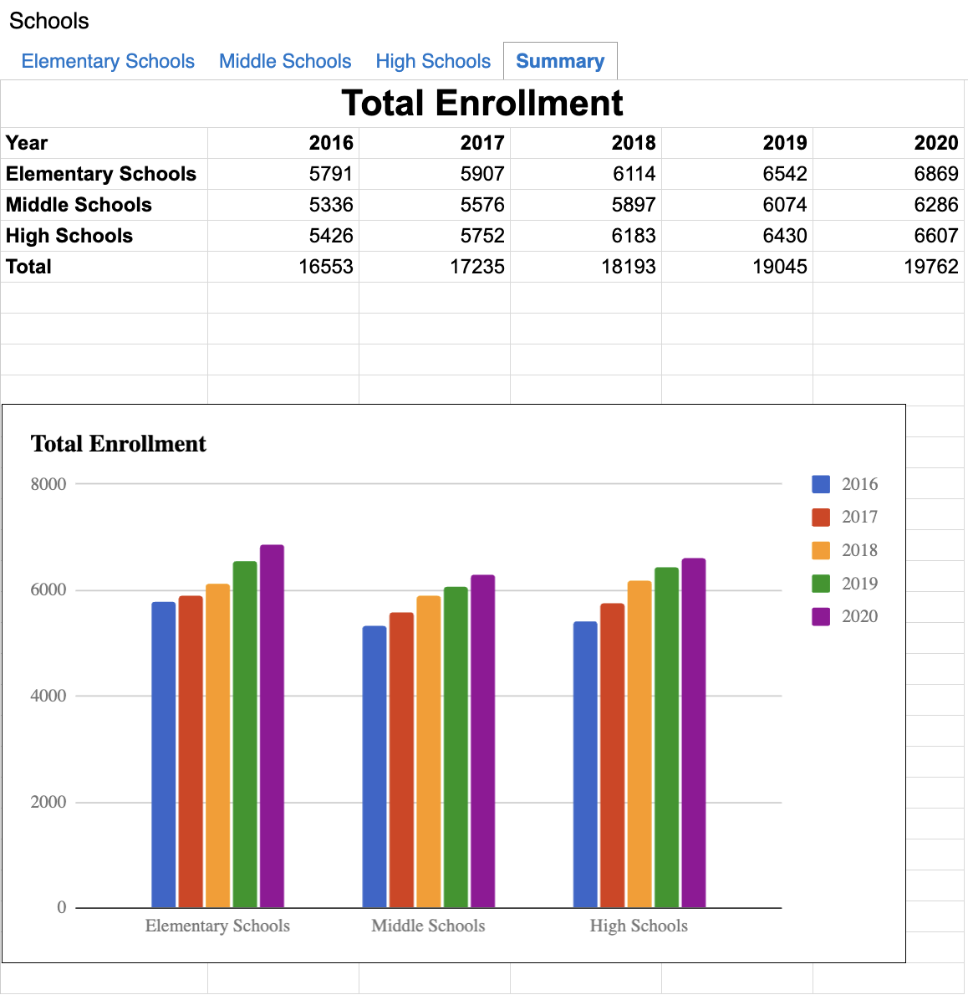
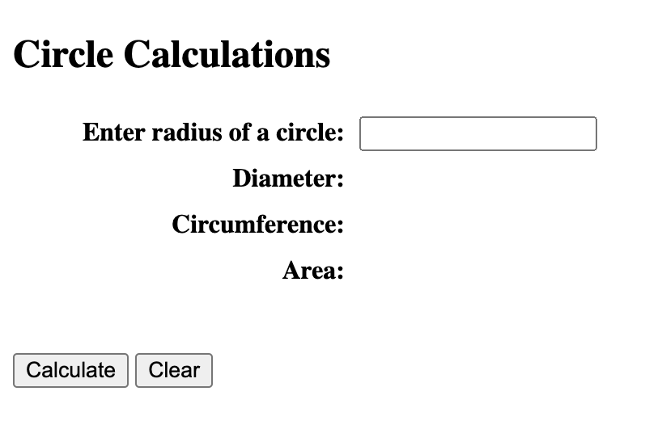
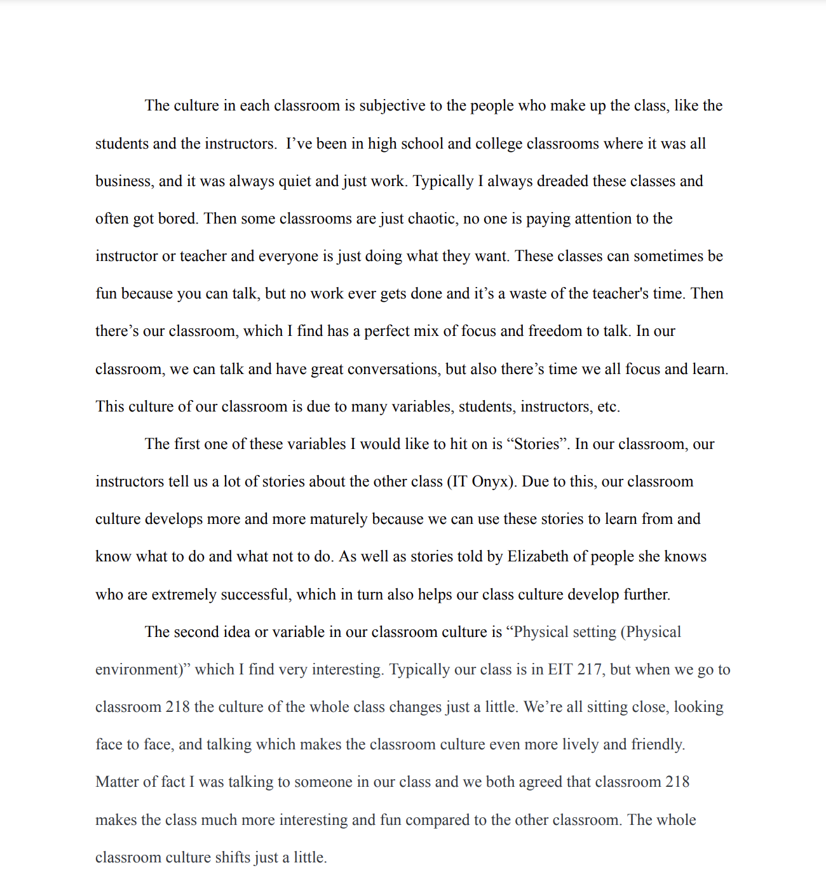

Writing Example 1
 Modern masculinity in males movies This is an essay I wrote for my Final in my Introduction to Motion Pictures class. I took a deep dive into films that I love watching. Some of these movies are Fight Club, Taxi Driver, and more. I analyze these films and then detail how modern masculinity is shown in these movies. I also take a deep dive into the actor's acting, the director’s messaging, and viewers' perspectives. As well as detailing how these portrayals of masculinity affect men on a multitude of levels.
Modern masculinity in males movies This is an essay I wrote for my Final in my Introduction to Motion Pictures class. I took a deep dive into films that I love watching. Some of these movies are Fight Club, Taxi Driver, and more. I analyze these films and then detail how modern masculinity is shown in these movies. I also take a deep dive into the actor's acting, the director’s messaging, and viewers' perspectives. As well as detailing how these portrayals of masculinity affect men on a multitude of levels.
Writing Example 2
 Exercise is a Must The next essay I would like to show is an essay I wrote for my Composition 2 class. This is an argumentative essay discussing why everyone should at least exercise for 2-3 hours a week. This is a subject I love, because of how much I work out and how exercise is an integral part of my life. In the essay, I explain all the positives that come from exercising both cardio and weight lifting and how I can testify to the positive effects of constant exercise.
Exercise is a Must The next essay I would like to show is an essay I wrote for my Composition 2 class. This is an argumentative essay discussing why everyone should at least exercise for 2-3 hours a week. This is a subject I love, because of how much I work out and how exercise is an integral part of my life. In the essay, I explain all the positives that come from exercising both cardio and weight lifting and how I can testify to the positive effects of constant exercise.
Web Project 1
 Visit the Pacific Northwest. This is a website that I created for my Mobile Web Final. I took inspiration from “Visit California” and created a site promoting the visitation of the Pacific Northwest. I chose this area because I love the area and was planning a trip there so I was “killing two birds with one stone”. The site shows beautiful scenery from each state in the Pacific Northwest. The site is divided into these three states. You can click on each state which takes you to a page where you can click on for more information about the state and its cuisine, state parks, and historic sites.
Visit the Pacific Northwest. This is a website that I created for my Mobile Web Final. I took inspiration from “Visit California” and created a site promoting the visitation of the Pacific Northwest. I chose this area because I love the area and was planning a trip there so I was “killing two birds with one stone”. The site shows beautiful scenery from each state in the Pacific Northwest. The site is divided into these three states. You can click on each state which takes you to a page where you can click on for more information about the state and its cuisine, state parks, and historic sites.
Web Project 2
 Devil's Den Park The next website is a website I created for my Information and Technology class. It is a specific site for the local state park called Devil’s Den State Park. On this website, there is a plethora of information. For example, it describes the park, operating hours for nearby fasciitis, trails, and events. Then it also has pages that detail some lodging or camping sites nearby, a Frequently Asked Question portion, and then a Contact portion. As well as having more recommended parks for people in the state of Arkansas which is all linked to those state parks' sites.
Devil's Den Park The next website is a website I created for my Information and Technology class. It is a specific site for the local state park called Devil’s Den State Park. On this website, there is a plethora of information. For example, it describes the park, operating hours for nearby fasciitis, trails, and events. Then it also has pages that detail some lodging or camping sites nearby, a Frequently Asked Question portion, and then a Contact portion. As well as having more recommended parks for people in the state of Arkansas which is all linked to those state parks' sites.
Database Project 1
Schools Spreadsheet. The first spreadsheet I created is a simple one that I created for my Information and Technology class that demonstrates a plethora of my abilities. It shows Elementary, Middle, and High Schools and presents the population in each school in those categories. Then it shows the projected population growth for the next four years. Then, it displays all this information on a graph at the bottom both labeled and color-coordinated. Finally, the spreadsheet has a summary tab that shows the population growth in each schooling level, and the graph at the bottom as well.
Database Project 2
 Jewelry Spreadsheet. My next spreadsheet is another project that I’ve done for my Information and Technology class. This spreadsheet is much more extensive and shows a wide range of information. It shows an inventory of 105 different items. Each item is either a Bracelet or Earrings however each one is made of different material like gold or silver and has different stones in each. It displays the average, lowest, and height prices of all these items. Then at the bottom, every 105 items is described in 10 different ways which are quantity in stock, product type, style #, retail price, gemstone, metal, value, price rank, stock level, and quantity level.
Jewelry Spreadsheet. My next spreadsheet is another project that I’ve done for my Information and Technology class. This spreadsheet is much more extensive and shows a wide range of information. It shows an inventory of 105 different items. Each item is either a Bracelet or Earrings however each one is made of different material like gold or silver and has different stones in each. It displays the average, lowest, and height prices of all these items. Then at the bottom, every 105 items is described in 10 different ways which are quantity in stock, product type, style #, retail price, gemstone, metal, value, price rank, stock level, and quantity level.
Programming Project 1
Circle calculator. This programming example is from my Information and Technology class. It is a circle calculator that can calculate the Diameter, Circumference, and area by just entering the circle’s radius. It also has a calculate and clear buttons. The program will not give a response if a radius isn’t entered. It uses JavaScript and J Query library to achieve all of this.
Programming Project 2
 Ajax. My next programming example is a Unit Converter that I wrote for my information and Technology Class as well. This program uses Javascript and J Query like the previous one but it also uses Ajax to pull the conversion equations from a server. Also like the previous one it also has a calculate and clear button and the program will not run if all the requirements aren’t met. You can plug in a value and choose its unit then choose the unit you want it converted to and it will pop up at the bottom.
Ajax. My next programming example is a Unit Converter that I wrote for my information and Technology Class as well. This program uses Javascript and J Query like the previous one but it also uses Ajax to pull the conversion equations from a server. Also like the previous one it also has a calculate and clear button and the program will not run if all the requirements aren’t met. You can plug in a value and choose its unit then choose the unit you want it converted to and it will pop up at the bottom.
Soft Skills Project 1
Class Culture Paper.This is a soft-skill project an essay I wrote for my Information and Technology class. The essay describes the unique culture of a particular classroom, shaped by a balance of focus and freedom fostered by both students and instructors. It contrasts this environment with others, highlighting that this classroom benefits from elements like storytelling, a lively physical setting, humor, relaxed language, and flexible rules, all of which contribute to an enjoyable and productive learning space. Stories shared by instructors provide insights and inspiration, the physical arrangement promotes engagement, and humor helps build camaraderie. Friendly communication from instructors, particularly Elizabeth, and minimal rules create a comfortable atmosphere that encourages students to engage and learn effectively.
Soft Skills Project 2
 Schedule. In my Information and Technology class, I completed a soft skills project focused on time management, where I analyzed how I allocate each hour throughout my week. This project allowed me to take a detailed look at my schedule, breaking down daily activities to see exactly where my time was going. I found it incredibly valuable because it helped me visualize my priorities and identify areas where I could improve my efficiency. I was especially pleased with my schedule that semester, as it felt well-balanced and productive. Although my routine has shifted since then, I often reflect on this project to stay mindful of how I spend my time and to ensure I'm not neglecting important areas. This project has become a helpful reference for maintaining a structured and purposeful approach to my time management.
Schedule. In my Information and Technology class, I completed a soft skills project focused on time management, where I analyzed how I allocate each hour throughout my week. This project allowed me to take a detailed look at my schedule, breaking down daily activities to see exactly where my time was going. I found it incredibly valuable because it helped me visualize my priorities and identify areas where I could improve my efficiency. I was especially pleased with my schedule that semester, as it felt well-balanced and productive. Although my routine has shifted since then, I often reflect on this project to stay mindful of how I spend my time and to ensure I'm not neglecting important areas. This project has become a helpful reference for maintaining a structured and purposeful approach to my time management.
Capstone Project

De'Medici Foundation. My capstone project was the final and most significant assignment in my Information and Technology class, spanning most of the semester to complete. This semester, we had the unique experience of competing in teams to design the best website for the Lorenzo De’ Medici Foundation, working directly with a real client. We used WordPress as the platform to ensure the foundation’s staff could easily update the site without the complexities of a hard-coded website. Through this project, I gained valuable experience with WordPress and learned to use Elementor to enhance functionality and design. This hands-on assignment taught me a great deal about client collaboration, adaptability, and web development tools.